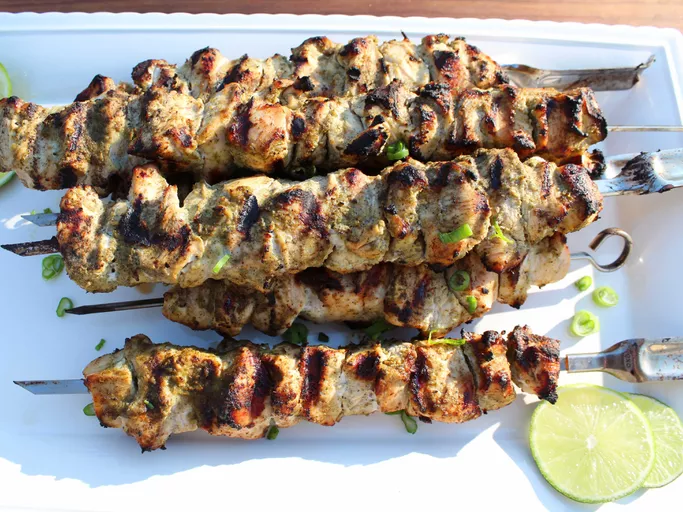

Jamaican Jerk Chicken

Home
Description
Jamaican jerk chicken is a dish rich in cultural heritage and packed with bold, spicy flavor. The recipe centers on a traditional jerk marinade made with Scotch bonnet peppers, allspice, thyme, garlic, ginger, and other spices, often blended with citrus juice and soy sauce. Chicken is marinated for several hours—or even overnight—to deeply infuse the meat with the signature smoky-sweet heat. Grilling over an open flame or coals is the traditional cooking method, lending the chicken its iconic charred edges and savory depth.
Once cooked, jerk chicken boasts a dark, caramelized crust and juicy, tender interior bursting with layers of flavor. Its typically served alongside classic Jamaican sides like rice and peas, fried plantains, or steamed vegetables, creating a hearty and satisfying plate. The heat from the peppers is balanced by the warmth of spices like cinnamon and nutmeg, making every bite complex and deeply aromatic. Whether enjoyed from a street vendor or homemade, jerk chicken delivers an unforgettable taste of the Caribbean.
Ingredients
- 6 skinless, boneless chicken breast halves - cut into chunks
- 1 cup water
- 4 limes, juiced
- 2 tablespoons vegetable oil
- 2 teaspoons ground allspice
- 2 teaspoons dreid thyme
- 1 ½ teaspoons ground black pepper
- 1 teaspoon salt
- 1 teaspoon brown sugar
- 1 teaspoon grinded ginger
- ½ teaspoon ground nutmeg
- 2 onions, chopped
- 1 ½ cups chopped green onions
- 2 habanero peppers, chopped
- 6 cloved garlics, chopped
Steps
- Preheat the oven to 425 degrees F (220 degrees C).
- Place hash browns in a medium bowl. Melt 5 tablespoons butter and pour over hash browns, season with seasoning salt or garlic powder as desired. Add 1 egg, mix well and press mixture onto the bottom and sides of a 9-inch spring form pan or pie dish.
- Bake in preheated oven until potatoes are golden brown and crispy around the edges, about 25 to 30 minutes.
- While crust bakes, melt remaining tablespoon of butter in a medium skillet over medium-high heat. Add ham, pepper, and green onion; cook and stir until bell pepper slightly softens, about 4 minutes. Remove from heat.
- When crust is ready, spread ham mixture over the bottom; sprinkle cheese evenly on top. Whisk remaining 5 eggs and cream in a medium bowl; add salt and pepper to taste and mix until well blended. Pour mixture evenly over ham and cheese mixture.
- Reduce oven temperature to 350 degrees F (175 degrees C.) Bake in the preheated oven until filling is puffed and quiche is lightly browned around the edges, about 35 minutes.